Mumbai
Mumbai, the capital, is known for landmarks like the Gateway of India, Chhatrapati Shivaji Terminus, and Elephanta Caves. It is a vibrant city with a rich history.
 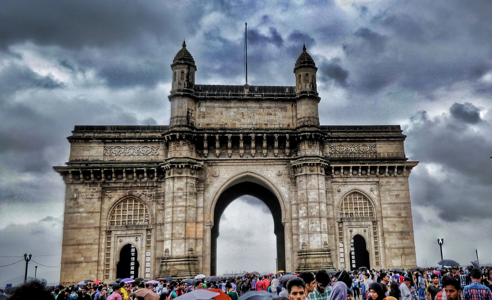
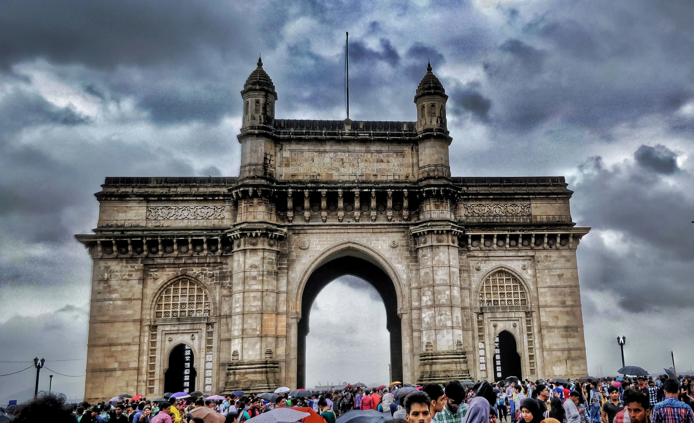
 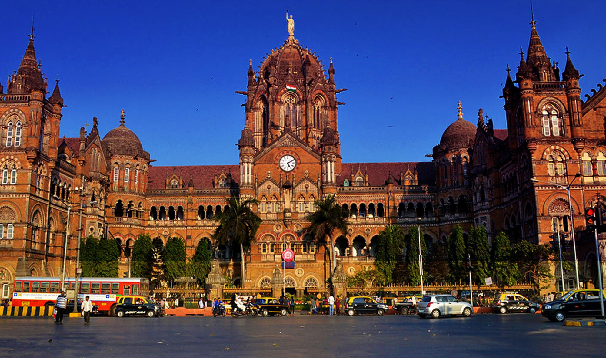
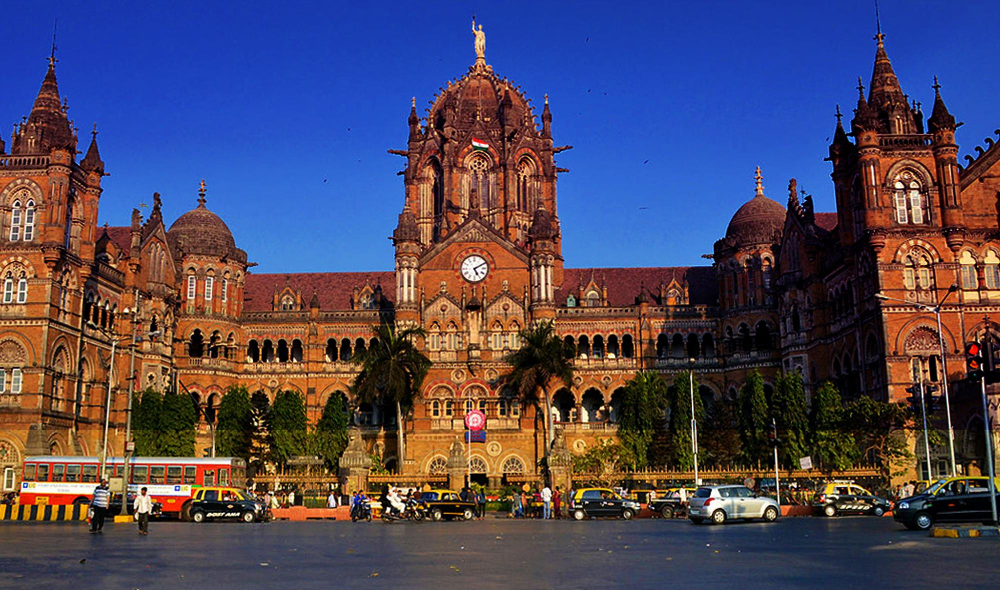


Mumbai, the capital, is known for landmarks like the Gateway of India, Chhatrapati Shivaji Terminus, and Elephanta Caves. It is a vibrant city with a rich history.
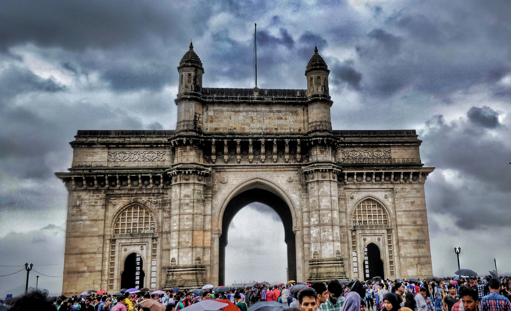
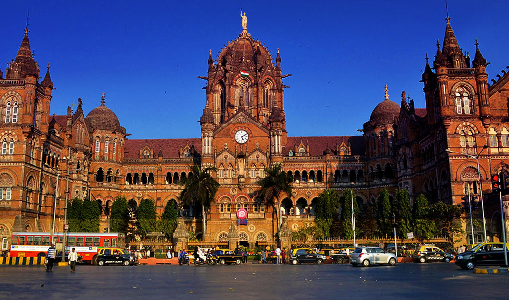
Pune has historical sites like Shaniwar Wada, Aga Khan Palace, and Sinhagad Fort. It is a city with a blend of Maratha and colonial architecture.
 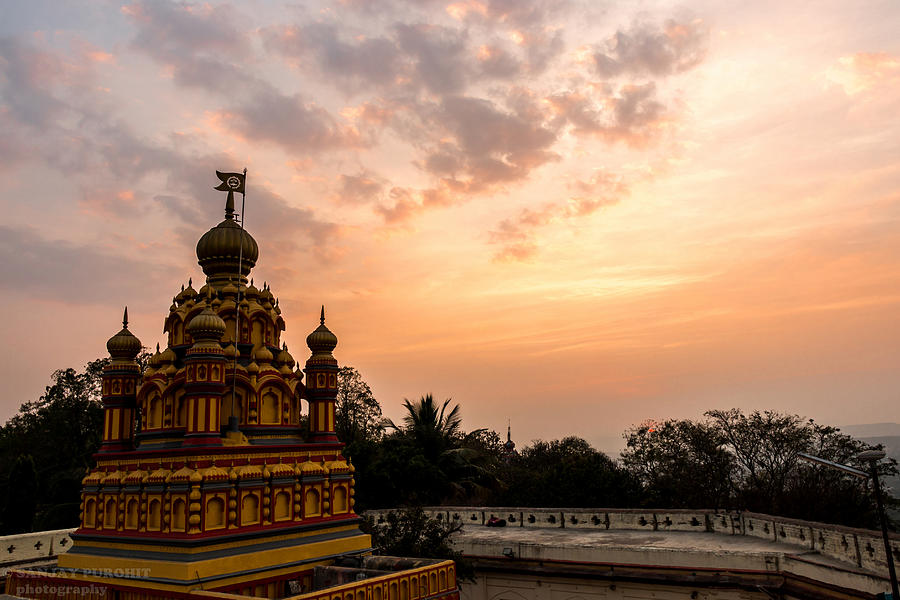
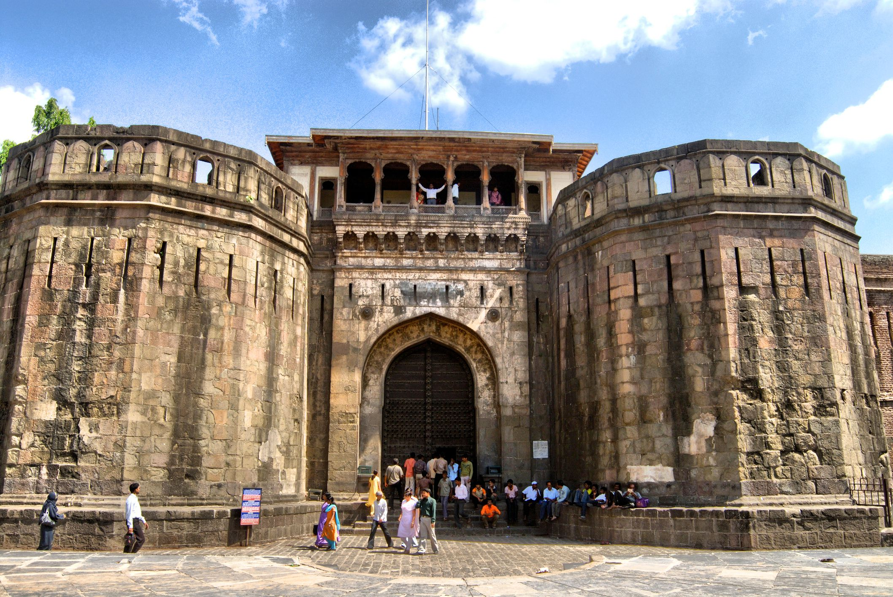
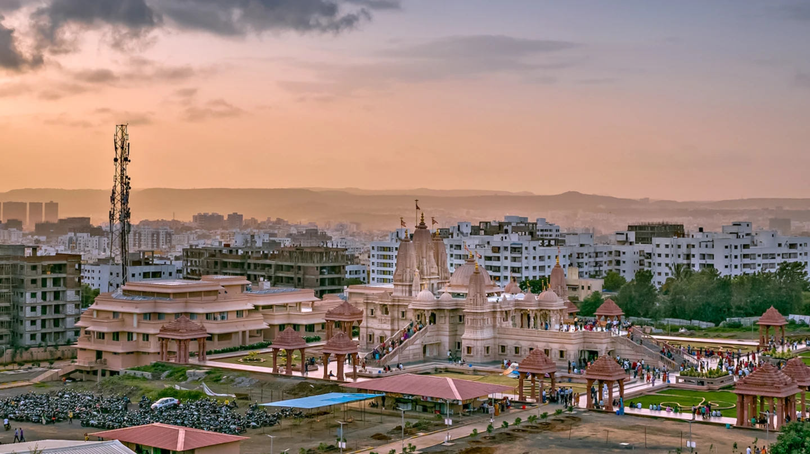
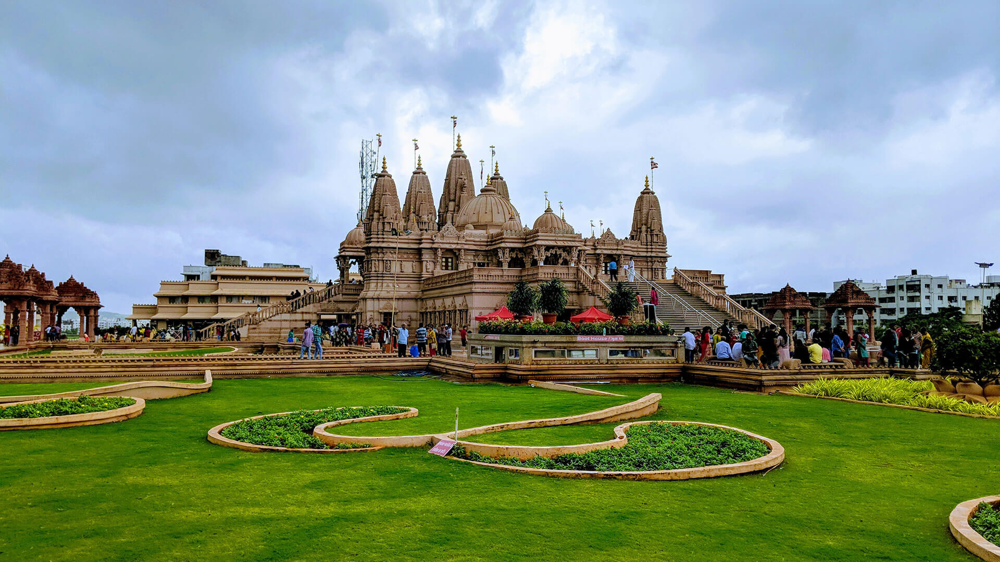
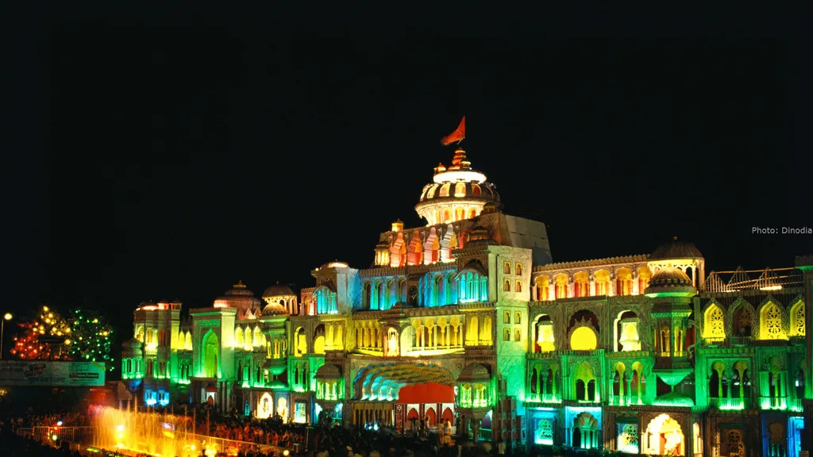
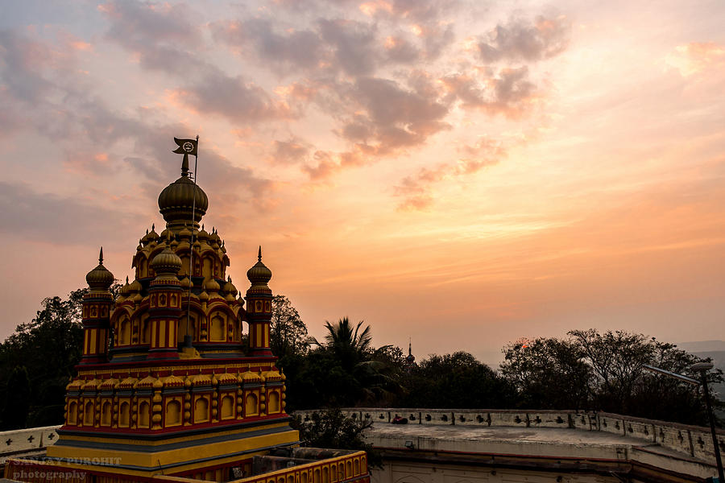
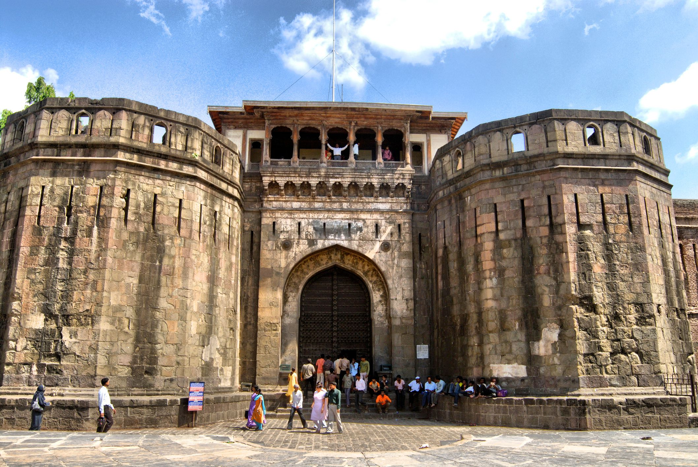
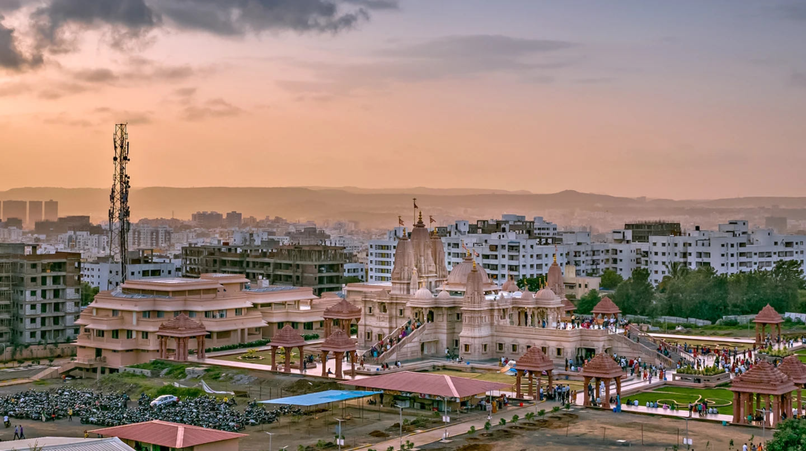
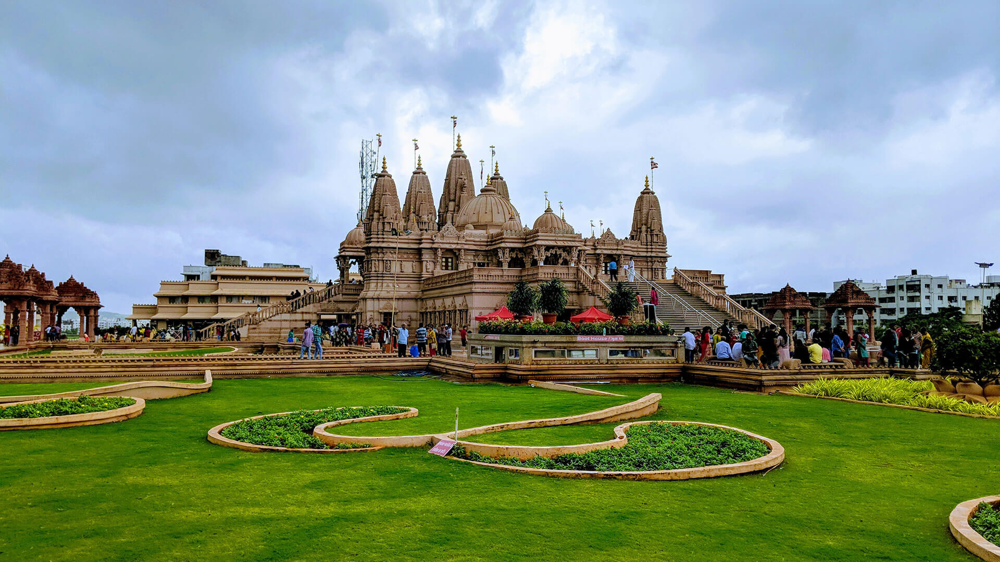
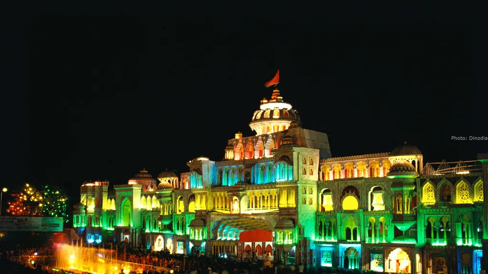
The Ajanta and Ellora Caves near Aurangabad are UNESCO World Heritage Sites. These rock-cut caves showcase exquisite ancient Indian art, particularly Buddhist sculptures and paintings.